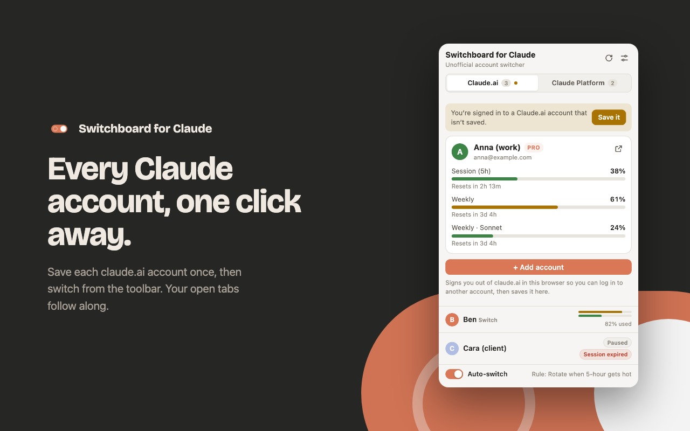
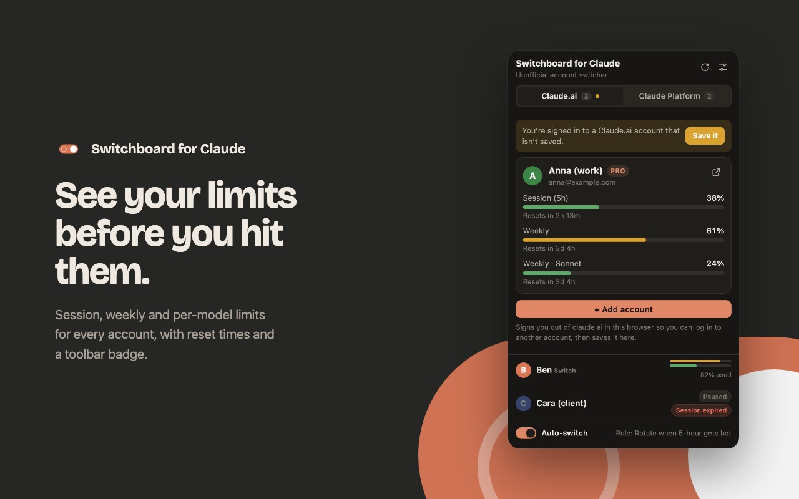
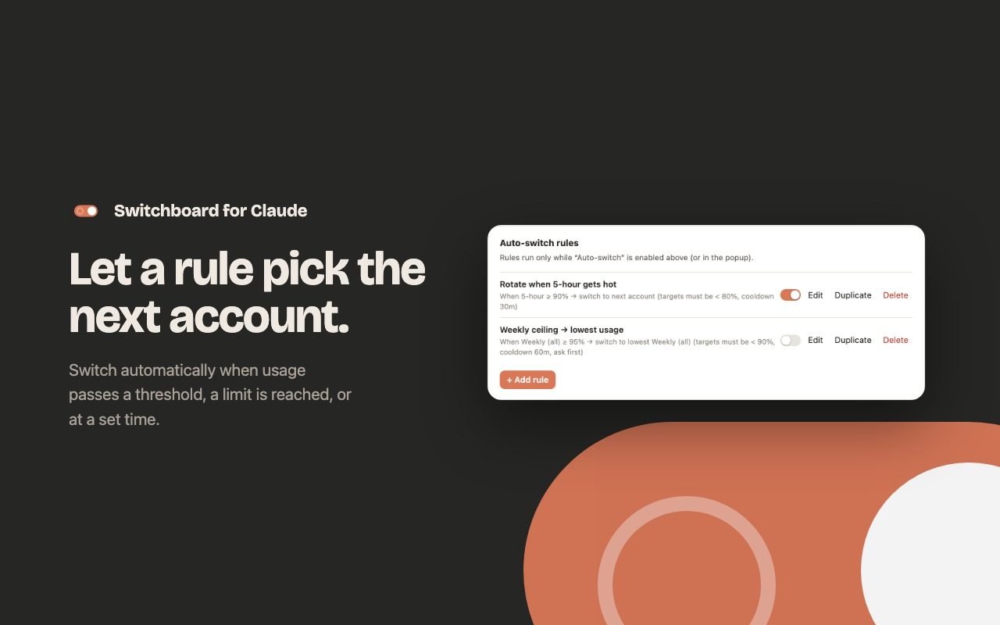
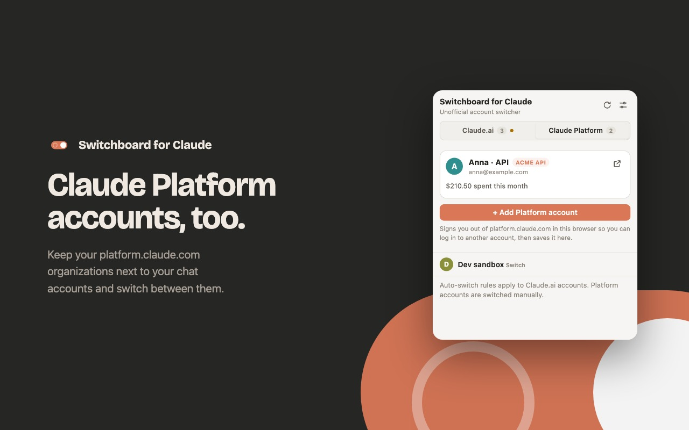
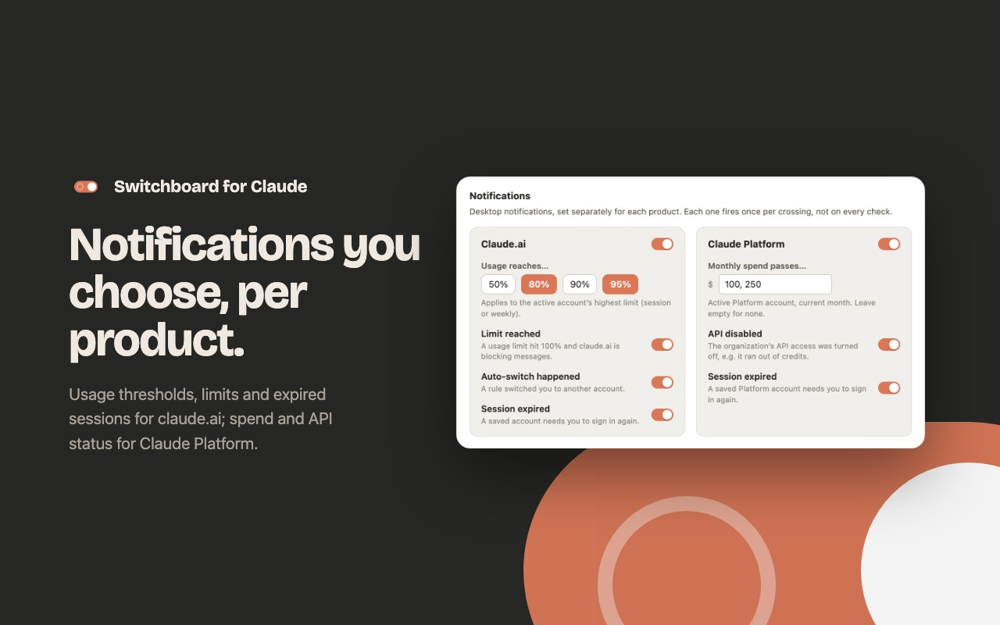
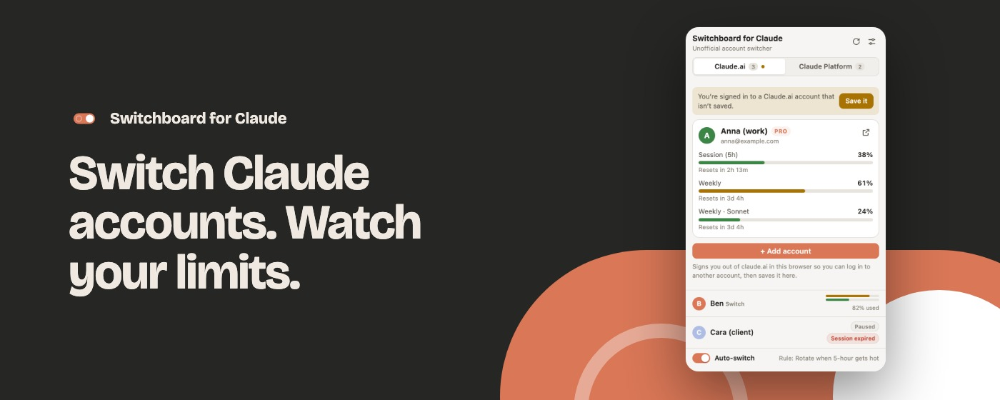
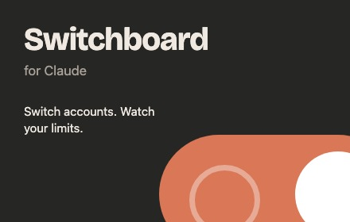

Switchboard for Claude: Chrome Web Store
Store assets and listing copy, generated from the real UI with dummy data. Assets: docs/store/. Copy: docs/store-listing.md. Package: npm run zip.
Screenshots

screenshot-1-switch.jpg
screenshot-2-limits.jpg
screenshot-3-rules.jpg
screenshot-4-platform.jpg
screenshot-5-notify.jpgPromo tiles and icon


Listing copy
Title
Switchboard for Claude
Short description (132 chars max)
Unofficial: switch claude.ai and Claude Platform accounts in one click, track usage limits, auto-switch by rules. 100% local.
Detailed description
Switchboard for Claude is an unofficial Chrome extension for people who use multiple Claude accounts (claude.ai and Claude Platform). Not affiliated with or endorsed by Anthropic. Claude is a trademark of Anthropic.
One-click account switching
Save each of your claude.ai accounts once, then hop between them from the toolbar popup or with the Alt+Shift+N keyboard shortcut. Label and color-code accounts so you always know which is which.
Usage-limit tracking
See how much of each account's 5-hour and weekly usage windows is consumed — including per-model weekly windows where claude.ai reports them — with reset times and an at-a-glance toolbar badge.
Claude Platform accounts
Keep your platform.claude.com (API / Console) organizations next to your chat accounts and switch between them the same way, independently of claude.ai. The current month's spend is shown when available. Access to platform.claude.com is optional and only requested when you open the Claude Platform tab.
Auto-switch rules
Define rules like "when my 5-hour usage passes 90%, switch to the account with the lowest usage." Conditions: usage threshold, hard limit reached, or a daily schedule. Targets: next account, lowest usage, your priority order, or a specific account. Includes cooldowns, target ceilings, paused accounts, and optional "ask me first" notifications.
Notifications, per product
Choose what to hear about for claude.ai (usage thresholds, limit reached, automatic switches, expired sessions) and for Claude Platform (spend passing amounts you set, API disabled, expired sessions).
Privacy by design
Everything is stored locally in your browser. No servers, no analytics, no telemetry, no third-party code. Optional backups are passphrase-encrypted on your device. Full policy: see the repository's PRIVACY.md.
Open source
MIT-licensed. Source, issue tracker, and security policy: https://github.com/dotKa/claude-switchboard
Note on usage data: usage figures come from an unofficial claude.ai endpoint (the same one its settings page uses) and may break if Anthropic changes it. You are responsible for ensuring your use of multiple accounts complies with Anthropic's Terms of Service and Usage Policy.
Single purpose statement
The extension's single purpose is to let a user manage and switch between their own Claude accounts (claude.ai and platform.claude.com) and monitor those accounts' usage — including optional rule-based automatic switching.
Permission justifications
| Permission | Justification |
|---|---|
cookies | Core functionality. Account switching works by reading the value of the claude.ai or platform.claude.com sessionKey cookie when the user saves an account, and setting that cookie when the user switches. Only claude.ai and platform.claude.com (plus Anthropic's lastActiveOrg cookie on .claude.com) are touched. |
storage | Stores account metadata, saved sessions, rules, settings, and switch history locally via chrome.storage.local. Nothing is synced or transmitted to the developer. |
alarms | Schedules periodic usage polling (user-configurable interval) and scheduled auto-switch rules, as required by the MV3 service-worker lifecycle. |
notifications | Delivers the notifications the user turns on in options: usage thresholds, limit reached, automatic switches and expired sessions for claude.ai; spend thresholds, API disabled and expired sessions for Claude Platform; plus confirmations for auto-switch rules set to "ask first". |
tabs | Before an account switch, finds open claude.ai or platform.claude.com tabs (only those of the product that was switched), parks them on the extension's own blank "switching…" page while the session is swapped, then returns them to that product's home page. This prevents the old page from invalidating the new session — see browsingData below. No tab content is read. |
declarativeNetRequest | Reads usage for the user's saved claude.ai accounts that are not currently active: for the duration of a single background request, a session rule attaches that account's own saved sessionKey cookie to the extension's own request to claude.ai's usage endpoint. The rule is scoped to requests initiated by the extension itself (never the user's tabs) and is removed immediately afterwards. No request or response bodies of the user's browsing are read or modified. |
browsingData | Clears the switched-from site's local storage/IndexedDB/cache/service-workers (never cookies) for the one origin being switched, immediately after the cookie swap. claude.ai's own web app caches which account is logged in outside of cookies; without this, it can detect the swapped session as an error and invalidate it, logging the user out. |
Host: https://claude.ai/* | Reading/writing the claude.ai session cookie and querying its usage endpoint. |
Host: https://platform.claude.com/* | Reading/writing the Claude Platform session cookie and reading the active account's current monthly spend. No other hosts are accessed. |
Data usage / privacy practices disclosures (store dashboard answers)
Collects or transmits user data? No data is collected by or transmitted to the developer or any third party. All data remains in local browser storage. The extension communicates only with claude.ai and platform.claude.com as part of its core function.
Personally identifiable information: Not collected by the developer. (Email/display name of the user's own claude.ai accounts are stored locally on the user's device for display purposes only.)
Authentication information: Not transmitted to the developer. Session cookies are stored locally solely to perform user-initiated account switching.
Remote code: None. All code ships in the extension package.
Data sale/transfer: None. Data is never sold, transferred, or used for advertising or creditworthiness.
Category & language
Category: Productivity
Language: English